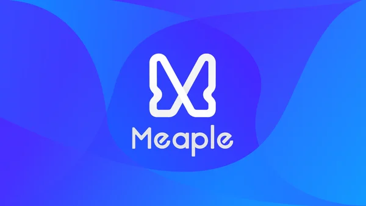
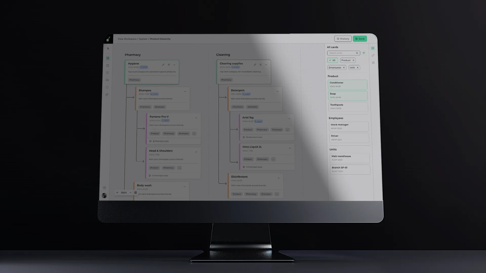
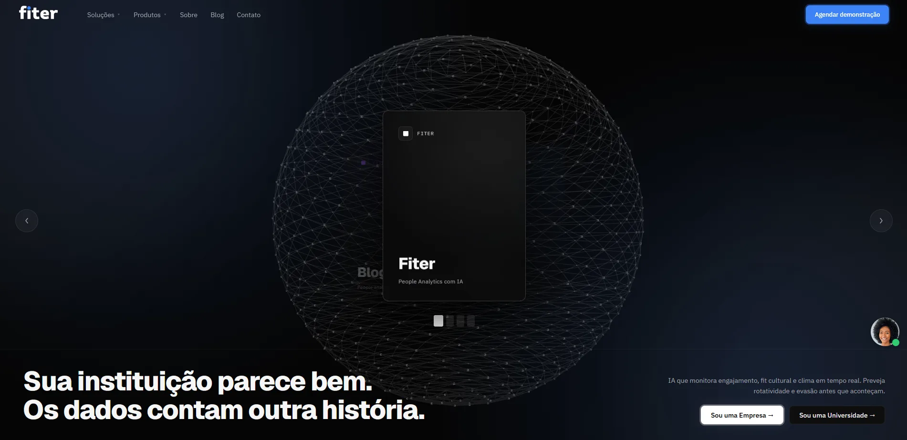
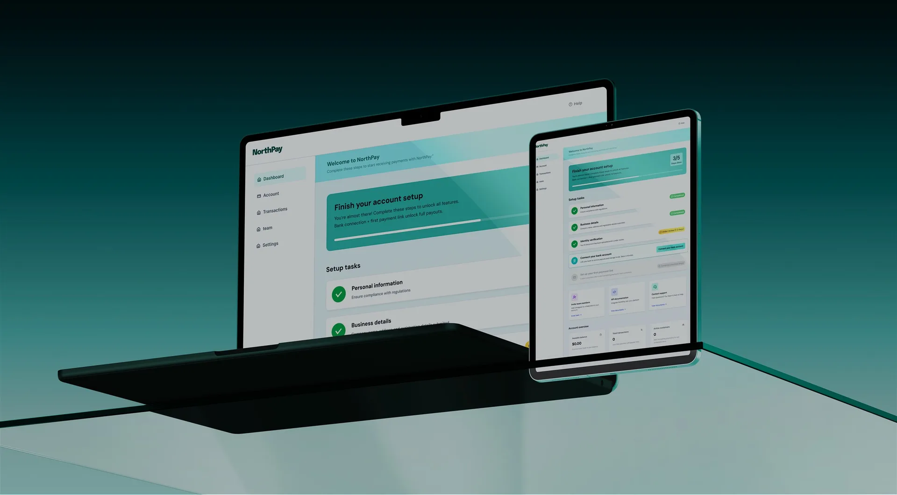

Trabalhos selecionados.
Estudos de caso de 8 anos projetando produtos de SaaS e Hospitalidade.

Meaple | Super-app de eventos, end-to-end
Marketplace end-to-end para a economia fragmentada de eventos no Brasil: descoberta, coordenação social, ingressos e pagamento dentro do evento em um único produto.
Ver estudo de caso →
MedMe | Plataforma de assistência médica domiciliar
Assistência médica domiciliar sob demanda com verificação de identidade, lógica de agendamento e pagamento via escrow construídos do zero.
Ver estudo de caso →
Instivo | Governança de data workspace
Uma camada de dados governada para operações de varejo: hierarquias linkadas por card, um motor de regras restrito, e um design system de quatro camadas reconstruído do zero.
Ver estudo de caso →
Vellumwire | Site de estúdio que converte
~1.000 sessões orgânicas/semana sem anúncios pagos. Um site projetado para condensar um ciclo de vendas completo em uma única visita.
Ver estudo de caso →
Design System da Vellumwire | Arquitetura de tokens
Quatro camadas, oito ramps de cor, e um processo de re-tematização que toca exatamente uma delas. Refinado sob pressão de produção durante o projeto Instivo.
Ver estudo de caso →
Fiter | Reconstrução completa do site
Score de SEO 22→100 em duas semanas. Um template Joomla reconstruído em 16 páginas estruturadas em dois ecossistemas de compradores, com tracking desde o primeiro dia.
Ver estudo de caso →Selo H | Reconstrução da plataforma de certificação
5x mais leads em 30 dias. Taxa de rejeição -40%. LCP 1,4s. Uma reconstrução de uma semana tornando uma certificação real tão séria quanto é.
Ver estudo de caso →
NorthPay | Conceito de fluxo de onboarding
Um conceito de onboarding e verificação fintech focado em reduzir atrito.
Ver estudo de caso →Nenhum projeto corresponde a esse filtro ainda. Tente outra categoria.
Vamos conversar
Aberto pra próxima posição.
Vamos conversar.